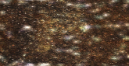

<style>
    body {
        margin: 0
    }
</style>
<shader-toy>
    <!-- Credit: https://www.shadertoy.com/view/llsGW7 -->
    
    <script type="frag">
        //// [2TC 15] Mystery Mountains.
        // David Hoskins.
        
        // Add texture layers of differing frequencies and magnitudes...
        #define F +texture(iChannel0,.3+p.xz*s/3e3)/(s+=s) 
        
        void mainImage( out vec4 c, vec2 w )
        {
            vec4 p=vec4(w/iResolution.xy,1,1)-.5,d=p,t;
            p.z += iTime*20.;d.y-=.4;
            
            for(float i=1.5;i>0.;i-=.002)
            {
                float s=.5;
                t = F F F F F F;
                c =1.+d.x-t*i; c.z-=.1;
                if(t.x>p.y*.007+1.3)break;
                p += d;
            }
        }        
    </script>
</shader-toy>
<script src="https://unpkg.com/kokomi.js@1.9.36/build/kokomi.umd.js"></script>
<script>
    kokomi.ShaderToyElement.register();
</script>